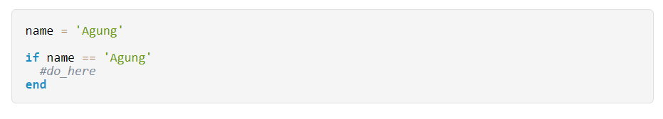
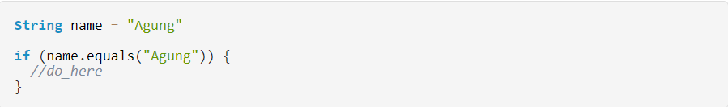
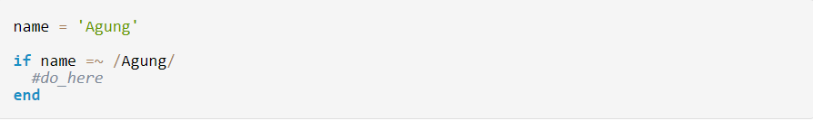
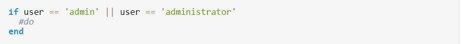
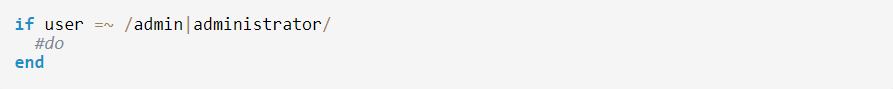
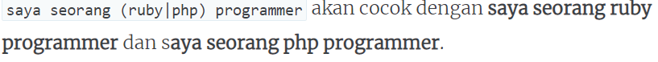
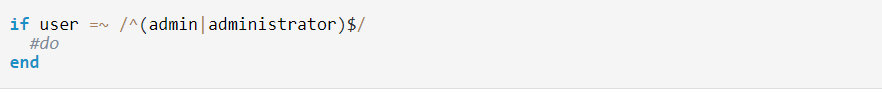
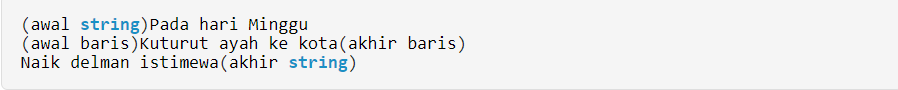

Apa itu RegEx?
Regex/regexp (regular expression) menunjukkan Regular
Expression yang digunakan dalam ilmu komputer teoritis, pemrograman, pengembangan perangkat lunak,
pengolah kata dan optimisasi mesin pencari. Regular Expression dapat digunakan untuk
menggambarkan string dan jumlah string dalam bentuk logis umum untuk mencari, mengganti,
memanipulasi, atau memproses lebih lanjut dalam dokumen, kode sumber, atau database.
Ahli logika dan matematika Stephen Kleene dianggap sebagai pendiri regex. Pada tahun 1956 ia menggunakan notasi jumlah reguler dalam esai tentang representasi peristiwa dalam jaringan saraf dan automata terbatas. Ini dan karya-karya lain saat ini adalah dasar-dasar mendasar dalam ilmu komputer teoretis. Regular Expression sekarang digunakan di berbagai bidang untuk menyederhanakan operasi, yang jika tidak, akan menjadi sangat padat karya dan menghabiskan waktu.
Regex dapat digunakan tergantung pada implementasinya dalam beberapa bahasa pemrograman, lingkungan dan editor teks, misalnya, dalam Perl, PHP, .NET atau JavaScript sebagai elemen perpustakaan. Atau di EditPad, Emacs dan Notepad ++ sebagai fungsi pencarian dan ganti dalam editor teks. Di Google Analytics, Regular Expression juga digunakan untuk memfilter sumber lalu lintas, menentukan segmen, dan memisahkan data laporan terperinci dari data lain.
Kegunaan Regular Expression
Penggunaan regex sangat beragam. Regular Expression yang mungkin tergantung pada notasi.
Ada beberapa notasi yang berbeda dalam bahasa pemrograman yang berbeda. Notasi ini disebut
nama pola shell, BRE (Basic Regular Expressions) dan ERE (Extended Regular Expressions).
Perbedaannya kadang-kadang disebabkan oleh fakta bahwa masing-masing karakter
dan terutama metakarakter (karakter kontrol) digunakan dalam bahasa pemrograman.
Secara umum, karakter (terminal) dan karakter meta dibedakan. Karakter direkam dalam rangkaian karakter (alfabet) yang berisi, misalnya, angka, huruf, dan koma. Metakarakter adalah operasi yang ditentukan seperti pergantian |, menautkan () dan [] dan mengulangi dengan *, + dan ?. Dengan ^ jumlah bisa dinegasikan. Metakarakter adalah instruksi untuk perangkat lunak pemrosesan. Karakter biasa dapat berada di depan atau di belakang metakarakter, makna formal mereka akan berbeda. Sebagian besar implementasi bekerja dengan mesin regex khusus yang mem-parsing dan menafsirkan Regular Expression yang terdaftar dan memeriksa sumber daya untuk instance.
- Karakter biasa: Semua angka dari 0 hingga 9. Semua huruf alfabet, dan beberapa karakter khusus (koma, tanda hubung, titik koma). Penting: Alfabet tergantung pada set karakter yang digunakan (misalnya, Unicode atau ASCII).
- Kelas karakter: \ d adalah, misalnya, angka dari 1 hingga 9. Sementara \ t akan menemukan semua tabulator. Pilihan lain adalah \ l untuk huruf kecil, \ untuk semua spasi atau \ u untuk semua huruf besar.
- Metakarakter: [] () {} | ? + – * ^ $ \
Relevansi praktis Regular Expression (RegEx)
Metode berikut dapat diterapkan dengan Regular Expression:
Pencocokan pola: Dengan menggunakan algoritma pencocokan string, teks dapat diperiksa untuk terjadinya pola. Dalam hal ini, Regular Expression adalah singkatan dari serangkaian string dengan kemunculannya yang direkonsiliasi dalam teks. Ekspresi regex menentukan pola, mesin memeriksa pola terhadap sumber daya (misalnya, dokumen HTML atau teks). Dalam keadaan tertentu, aturan penggantian dapat ditentukan untuk secara langsung mengubah string yang ditemukan. Pengukur dapat digunakan untuk mempersempit hasil. Contoh: verifikasi alamat email yang dimasukkan mengenai kebenaran formalnya, atau pencarian domain tingkat atas dalam daftar URL
Globbing: Nama file ditambahkan ke placeholder untuk memilih semua file dalam format tertentu, misalnya. “Sampel. * Wildcard akan menemukan semua file dalam sistem manajemen file yang dimulai dengan” sampel, “tetapi format file yang berbeda seperti .txt. atau .doc. Tanda bintang mewakili berbagai format file. Globbing juga digunakan dalam penolakan serangan layanan di mana server sengaja kelebihan beban.
Pemotongan: Dalam pencarian basis data, istilah pencarian sering disingkat atau dipotong menggunakan wildcard. Istilah sampel * akan menemukan semua istilah yang dimulai dengan sampel dan diakhiri dengan huruf lain, seperti, pencocokan sampel, pengujian sampel atau contoh sampel. Dengan pemotongan, ruang pencarian diperbesar. Contoh: Dalam pencarian perpustakaan, semua entri dapat ditemukan yang mengandung istilah pencarian tertentu.
Stemming: Dalam stemming, varian morfologis yang berbeda dari suatu kata dikaitkan dengan kata stem. Dengan demikian penolakan dan konjugasi kata-kata dapat terjadi
RegEx Paling Dasar
Yang paling dasar dari regex adalah sama saja kalau kita membandingkan apakah kedua string memiliki nilai yang sama. Misalnya yang biasa dilakukan dengan menggunakan if.

atau kalau di java

Di regex, kalau kita membuat pola merah maka dia akan cocok dengan string yang berbunyi merah. Pola xxx akan cocok dengan string xxx dan begitu seterusnya. Sesederhana itu.
Regex sifatnya case sensitive sehingga android tidak akan cocok dengan Android.
Pencocokan regex di Ruby bentuknya seperti ini

Menggunakan tanda garis miring untuk mengapit sebuah regex.
Pencocokan Karakter Tunggal
Di sinilah asyiknya regex, dia tidak hanya bisa mencocokkan nilai string secara literal tapi juga bisa berdasarkan polanya. Mari kita belajar membuat pola dengan menggunakan tanda titik (.)
Tanda . digunakan untuk membuat sebuah pola yang bisa diisi oleh sebuah karakter apapun baik itu huruf;angka; maupun tanda baca seperti koma, titik dan lain sebagainya.
Dengan pengertian tersebut berarti poin-poin di bawah ini valid
– Pola . akan cocok dengan karakter tunggal apapun semisal R, !, @
– Pola .. akan cocok dengan dua buah karakter apapun misalnya Ag, 90, !{ tetapi tidak untuk X karena hanya terdiri dari satu karakter.
Satu pertanyaan, kalau kita punya pola 3.14 maka string apa yang akan cocok?.
Yes, 3.14, 3×14, 3914, 3+14 dan seterusnya semua akan cocok. Bagaimana kalau kita sebenarnya hanya menginginkan dalam string itu ada tanda titik yang sungguhan?. Gunakan tanda backslash untuk membuat escape character \.
3\.14 hanya akan cocok dengan string 3.14. Contoh lainnya adalah Mr\. Agung hanya cocok dengan Mr. Agung
Dengan bekal itu kita bisa bermain-main untuk membuat beberapa pola yang menyenangkan.
– a...g bisa cocok dengan agung, abang, astig dst
– ...x akan cocok dengan 4 karakter di mana karakter terakhirnya adalah huruf x
– .r\. Holmes bisa cocok untuk string Mr. Holmes maupun Dr. Holmes
Set
Kadang kita memang membutuhkan batasan. Tadi di atas, . membuat semua karakter yang ada bisa cocok. Jika kita menginginkan pembatasan maka kita bisa menggunakan karakter kurung siku [] yang mana di dalamnya hanya berisi karakter-karakter yang dibatasi.
– Regex [aiueo] hanya akan cocok dengan baik a, i, u, e maupun o.
– [0123456789] hanya akan cocok dengan angka dari 0 sampai dengan 9
Perlu diingat bahwa set sama juga seperti ., hanya berlaku untuk satu karakter sehingga ae dianggap tidak cocok begitu juga dengan 69.
Tambahan informasi ini bisa membuat kita untuk menciptakan regex seperti [aA]gung [sS]etiawan yang akan cocok dengan nama saya baik itu menggunakan huruf kapital untuk awal kata maupun tidak.
Pengembangan lain misalnya untuk memastikan ada dua buah digit bilangan heksadesimal menggunakan [0123456789abcdef][0123456789abcdef] seperti 2f, 5a, 8b dan tidak untuk 1o, 6p.
Range
Bagaimana kalau kita mau membuat hanya ada 2 buah karakter yang mana karakter pertama adalah a-z dan yang kedua 0-9?
Apakah seperti ini?
[abcdefghijklmnopqrstuvwxyz][0123456789]
Sangat tidak praktis, terlalu panjang. Kita bisa menggunakan range untuk cara yang jauh lebih gampang. Range ditandai dengan karakter -. Regex tadi bisa diubah menjadi seperti ini [a-z][0-9].
Regex untuk bilangan heksadesimal yang sudah ada pada bagian sebelumnya bisa kita ubah menjadi seperti ini sekarang
– [0-9abcdef]
– [0-9a-f
Contoh lain untuk memastikan hanya ada huruf dan angka serta underscore [0-9a-zA-Z_]
Alternatif
Alternatif digunakan sebagai solusi andai kata yang kita inginkan bisa lebih dari satu bentuk. Misalnya adalah am|pm akan cocok dengan am maupun pm. Alternatif ditandai dengan karakter pipe |.
Alternatif mirip dengan penggunaan or. Kita ingin memastikan bahwa sebuah string bernilai admin atau administrator. Implementasi menggunakan blok if pada ruby adalah seperti ini.

Mengubah kode di atas dengan kali ini memanfaatkan regex hasilnya adalah

Cara ini belum tepat karena string bernilai admindong dan administratoraja masih bisa tembus. Begitu juga dengan dongadmin serta ajaadministrator. Nanti kita akan membahas soal ini.
Alternatif bisa menggunakan tanda kurung untuk memisahkan mana bagian yang menjadi alternatif dan mana yang bukan.

Tanda * dan ?
* digunakan untuk membentuk suatu karakter yang jumlahnya antara 0 sampai banyak tak hingga di mana suatu tersebut adalah karakter yang berada di depan tanda *.
– ag* akan cocok untuk a, ag, agg, aggg, aggggg dst.
– ru*by berarti rby,ruby, ruuby,ruuuby cocok
Jika digabung dengan yang sudah kita pelajari di atas maka
– [aiueo]* adalah deretan huruf vokal sampai tak terhingga
– [0-9]* adalah angka sampai digit yang tak terhingga
. artinya semua karakter dan * membuat jumlahnya tak terbatas maka jika digabungkan menjadi .* artinya adalah apapun tak terbatas.
Salah satu contoh gampang adalah Agung .* yang berarti seseorang yang nama depannya Agung atau .* Setiawan, seseorang yang memiliki nama belakang Setiawan.
Tanda ? hampir mirip dengan * bedanya ada pada jumlah. ? jumlahnya antara 0 atau 1 beda dengan * yang 0 sampai tak terbatas.
Awal dan Akhir
admin|administrator akan cocok dengan string yang mengandung kata admin atau administrator sehingga menyebabkan string seperti adminaja, ajadminaja dst akan dianggap cocok dengan regex yang kita buat.
Supaya hanya benar-benar string admin dan administrator saja yang memenuhi regex maka kita perlu memberit tanda di mana awal dan di mana akhir dari string. Untuk itu digunakan ^ dan $.
–^admin akan cocok dengan adminaja tetapi tidak untuk ajaadmin
– admin$ akan cocok untuk ajadmin tetapi tidak untuk adminaja
– ^admin$ hanya akan membuat string admin saja yang lolos, tidak untuk adminaja, ajaadmin, ajaadminaja.
Dengan begitu berarti sekarang kode yang tadi digunakan untuk mengecek string user berubah menjadi

Tambahan, sebenarnya itu ^ dan $ adalah pembatas awal dan akhir untuk baris bukan string tetapi bisa digunakan untuk membatasi string juga.
Perbedannya adalah

Dan lain-lain
– + untuk 1 atau banyak karakter. ba+ cocok dengan ba, baa dst tapi tidak jika hanya b
– {} untuk jumlah spesifik
– a{3} harus ada a sebanyak 3
– a{3,} harus ada a sebanyak 3 atau lebih
– a{3,9} harus ada a sebanyak 3 sampai dengan 9